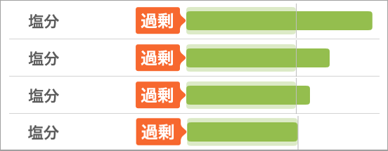

健診で減塩を勧められた・むくみが気になる方へ
減塩を「頑張る」のをやめたら
体が変わった話
あすけんで塩分だけオーバーし続けた私が、食事管理を手放すまで。
あすけんで「塩分だけオーバー」、心当たりありませんか？
食事管理アプリ「あすけん」で食事を記録していると、カロリーや糖質はだいたいクリアできるのに、塩分だけ毎回オーバーする——思い当たる方が多いと思います。
筆者（40代・女性）もまさにそうでした。健康診断で血圧が高めと指摘され、もともと目のことも心配があったので、塩分を意識しなければとあすけんで記録をつけ始めました。糖質や脂質は食べるもの、食材そのものを選ぶことでクリアできていましたが、肝心の塩分だけがどうしてもオーバーし続けていました。
加工食品に頼ったり外食した日はその一食でコントロールが崩れる...
「今日もだめだった」という感覚が積み重なって、記録すること自体がだんだんストレスになっていきました。

塩分だけオーバーする日が続く足のむくみもひどくて、夕方になると靴がきつくなるくらい。「これも塩分のせいかも」とはうっすら思っていたけど、毎日コツコツ記録して気をつけているのに、これ以上いったい何をどうすればいいんだろう。完全に手詰まりでした。
- 健診で血圧が高めと言われた・減塩を勧められた
- 足や顔のむくみが気になる・夕方には靴がきつくなる
- あすけんで塩分だけオーバーし続けている
- 加工食品の成分表を見て、買うのをためらうことがある
- 外食のあとに罪悪感を感じる
一つでも当てはまるなら、この記事が参考になるかもしれません。
加工食品を買うときのあの罪悪感、わかります
塩分を気にし始めると、スーパーで栄養価を見る癖がつきます。そして気づくんです。「これ、一個で3g以上ある…」と。
筆者も、コンビニやスーパーで商品を手にとり塩分を確認しては戻す、というのを繰り返していました。外食した日は「今日はもうだめだ」とあすけんに入力する手が重くなるあの感覚。でも外食や加工食品の塩分は、正直コントロールしにくい。加工食品や外食を完全に断つことなんてできないし、かといって自炊で「究極の薄味」を貫くのも、家族がいると現実的ではありません。「健康」と「美味しさ」のどちらかを捨てなきゃいけないような、出口のない迷路にはまり込んでいた気分でした。
🍔 ファストフードの塩分量（目安）
| メニュー | 塩分量（目安） |
|---|---|
| マクドナルド ビッグマック | 2.8g |
| マクドナルド てりたまバーガー | 2.6g |
| ケンタッキー オリジナルチキン | 1.7g |
| ラーメン（スープ含む） | 4〜6g |
| コンビニのおにぎり（塩） | 約1.5g |
※ 各社公表データをもとに編集部調査。時期・地域により異なる場合があります。
なぜ気をつけているのに塩分だけオーバーするのか
日本人の平均摂取量は高血圧学会の目標値の約2倍つまり、普通の食事をしているだけで、毎日『倍のスピード』で体にダメージを蓄積しているのと同じなのです。
よく知られていることですが、日本の食卓は、構造的に塩分を避けられないようになっています。醤油、みそ、めんつゆ、ポン酢。和食の定番調味料は、どれも塩分が驚くほど高い。
「体に良さそうだから」と和食を選び、自炊を頑張るほど、実は塩分摂取量が増えてしまうという残酷なジレンマ。
「あすけん」の目標値を眺めながら、何度も思いました。
「この数値、実際に守れている人なんて日本にどれだけいるんだろう？」
「みんな平気そうに食べているのに、私だけがこんなに神経質にならなきゃいけないの？」
そんな風に、どこかルールそのものに疑問を抱き、投げ出したくなる瞬間もありました。でも、「それでも、私の血圧や足のむくみに塩分が直撃している」という事実は、どれだけ言い訳をしても変わってくれないのです。
醤油だけじゃない。スーパーでは出会えない『減塩の選択肢』に救われた
でも、ふと気づいたんです。
週末の楽しみや、たまの贅沢で外食をすれば、どうしても1食で1日分に近い塩分を摂ってしまう。日々の自炊では塩分の土台を下げておかないと、あっという間に許容オーバーになってしまうのは当然。「何かを食べるのを我慢する」のではなく「当たり前に使う調味料」の底上げをすること。それが、出口のない迷路から抜け出す唯一のルートでした
醤油・みそ・ドレッシング・だし——よく使うものを片っ端から減塩の専門店で購入しました。
他では買えない減塩食品がたくさん！減塩専門店「無塩ドットコム」最初は「味が薄くなりそう」と不安でしたが、実際に使ってみると思ったより全然美味しい。 塩分が少ない分うまみが際立っていて、むしろ料理が美味しくなった気すらします。
それに、一番驚いたのは種類の多さです。近所のスーパーだと、減塩コーナーにあるのは醤油と味噌くらい。でも、無塩ドットコムには焼肉のタレやポン酢、ソース、ケチャップまで「えっ、こんなものまで減塩があるの？」という驚きのラインナップが揃っていました。
ちなみに、Amazonや楽天ではなく、あえてこの専門店を使っているのには理由があります。
大手サイトで減塩調味料を一本ずつ探すのは手間ですし、いざ買おうとすると「3本セット」などのまとめ買いが条件だったり、1本ごとに高い送料がかかったりすることが多いんです。
その点、ここは「減塩のプロ」が選んだものが一箇所に揃っているので、迷う時間がありません。まずは必要なものをセットで揃えて、あとはお気に入りを同梱して一気に届けてもらう。この「探す手間がない」のと「賢く揃えられる」ことが、忙しい私には一番のメリットでした。
- 食事管理のストレスから解放された
- 塩分が明らかに減っていることが数字で確認できたので、あすけんへの記録はきっぱりやめました。毎日の入力に使っていた時間と気力を取り戻し、それだけでずいぶん気持ちが軽くなりました。
- 足のむくみが明らかに軽くなった
- 夕方になると靴がきつくなるほどだったむくみが、2〜3週間でかなり改善。「塩分ってこんなに直接影響するんだ」と実感しました。
- 血圧が安定した状態をキープできている
- 治療を続けながら食事の塩分も整えたことで、血圧が安定した状態を維持できています。食事だけで何とかしようと焦らなくてよかったと思っています。
- 目の定期検査も問題なし
- もともと目のことで経過観察が続いていて、血圧が高い状態が続くと目への負担が増すと言われていました。定期的に検査を受けていますが、今のところ問題なしをキープできています。
一番変わったのは、食事管理を手放せたことかもしれません。調味料を変えてしまえば、あとは普通に料理するだけ。「今日も記録しなきゃ…」「外食しちゃった…」というプレッシャーが、だいぶ軽くなりました。むくみも取れて、気づいたら体重も少し減っていて、いいことだらけでした。
私が実際に使っている
減塩調味料はここで買っています
「減塩調味料ってスーパーにもあるけど、種類が少ない…」と感じていたとき見つけたのが、「無塩ドットコム」です。塩分ゼロ〜超減塩の食品・調味料に特化した専門ショップで、ラインアップが圧倒的に豊富。普段使いの調味料をほぼここで揃えています。
お試しセット
初めてのかた向けのセット。何から始めればいいか分からないかた、醤油はもちろん、ポン酢やだしつゆ、ケチャップなど調味料を一新して減塩を手軽に始めるのにおすすめです。
お得に減塩を始める →塩ぬき屋 50% 減塩 焼き肉のたれ
塩分が気になって炒め物を避けていたけど、これのおかげで普通のおかずに戻りました。肉と野菜をワンパンで炒めてたれを回しかけるだけ。美味しくて満足感も高いのに、減塩だから安心して食べられます。
スーパーにないタレをチェック →塩ぬき屋 無塩 極み二八そば
そばに無塩タイプがあること自体、最初は驚きでした。かけそばは麺もつゆも塩分が多くて、正直諦めていた食べ物です。無塩ドットコムのだしつゆと合わせれば安心して食べられて、味もほぼ違和感なし。蕎麦湯まで気にせず飲めるのが地味に嬉しいです。
無塩蕎麦の詳細を見る →よくある疑問・不安にお答えします
もし濃い味が好きな家族がいても、食卓で醤油を数滴足せば済む話。ベースの調理を無塩・減塩にするだけで、家族全員の「知らない間の塩分貯金」ができるので、作る側の心の余裕が全然違います。
調味料を変えるだけ。
それだけで、食事管理が楽になります。
頑張って食べるものを変えなくていい。調味料を減塩にするだけで、塩分オーバーの毎日から抜け出せます。